MATIS
Multi-level Asynchrounous Tools Interconnection System
Fast complex asynchrounous processes made easy.
Concepts
- Input driven execution: best explained with this .
- Parallelism: Tools are executed in parallel if it gives a time benefit. The result is a very fast process.
- Input order preserved: even if a tool processes 3 inputs at the same time, outputs are post to the next tool in the same order.
- tracability: Inputs trigger tools processing. And tools processing produces output. You always know which input has been needed to produce any output.
Example
|
| path
+----------+
| loadBody |
+----------+
path | | text
| |
+-------+--( | )----------+
| | |
path | | | path
+------------------+ | +------------------+
| changeExtForHead | | | changeExtForFoot |
+------------------+ | +------------------+
path | | | path
| | |
path | | | path
+------------+ | +------------+
| existsHead | | | existsFoot |
+------------+ | +------------+
no | | yes | yes | | no
| | | | |
void | | path | path | | void
+-----------+ +----------+ | +----------+ +-----------+
| constHead | | loadHead | | | loadHead | | constHead |
+-----------+ +----------+ | +----------+ +-----------+
text | | text | text | | text
| | | | |
+---+---+ | +---+---+
| | |
+------------+ | +------------+
| | |
| b| |
| o| |
| d| |
head | y| | foot
+--------+
| concat |
+--------+
| text
|
var Matis = require("async-tools");
// Create tools.
var loadBody = Matis.tools.LoadText('utf-8');
var loadHead = Matis.tools.LoadText('utf-8');
var loadFoot = Matis.tools.LoadText('utf-8');
var changeExtForHead = Matis.tools.ChangeExtension({js: "head"});
var changeExtForFoot = Matis.tools.ChangeExtension({js: "foot"});
var existsHead = Matis.tools.ExistsFile();
var existsFoot = Matis.tools.ExistsFile();
var constHead = Matis.tools.Constant("// Missing header.\n");
var constFoot = Matis.tools.Constant("// Missing footer.\n");
var concat = Matis.tools.ConcatStrings(['head', 'body', 'foot']);
// Link tools.
loadBody.link('text', concat, 'body');
loadBody.link('path', changeExtForHead).link(existsHead).link('yes', loadHead).link('text', concat, 'head');
loadBody.link('path', changeExtForFoot).link(existsFoot).link('yes', loadFoot).link('text', concat, 'foot');
existsHead.link('no', constHead).link(concat, 'head');
existsFoot.link('no', constFoot).link(concat, 'foot');
// Execute.
loadBody.exec(
{ path: 'myfile.js' },
function (output) {
console.log("Result is: " + output.text);
},
function (err) {
console.error("Error: " + err);
}
);Build-in tools
While it's easy to write your own tools, we provide a list of generic build-in tools which can help you quickly prototype your processes.
Matis.tools.ChangeExtension
An extension is the string after the last occurence of a dot (.) in
a path. This tool replaces extensions with other one. It never
fails: the reject function will never be called.
@param {object} extensions - Each attribute name is replaced with
it's value. For instance {js: 'head'} means than the extension
.js must be replaced with .head. Other files names remain
unchanged.
Matis.tools.ConcatStrings
Concat all the inputs in one output.
@param {array[string]} inputs - Array inputs' names.
-
input: Thisn tool has a variable number of inputs specified by the
inputsargument. -
output
- {string}
text- The resulting concatenated string.
- {string}
Matis.tools.ConsoleLog
This tool is used for debug purpose. The input is displayed with the
console.log() function, then sent to the output unchanged.
Matis.tools.Constant
Constants cas be used in many cases, such as default values.
- argument: the constant value this tool will always emit.
-
input
- {any}
void- This input is just a trigger. It's value is ignored.
- {any}
-
output
- {any}
value- A constant value defined by thevalueargument.
- {any}
Matis.tools.ExistsFile
If path exists and is a file, emit it on the yes output,
otherwise, emit it on the no.
-
input
- {string} path - Path of the file we want know if it exists.
-
output
- {string} yes - Path of the file if it exists.
- {string} no - Path of the file if it does not exist.
Matis.tools.ForEach
-
argument:
- {array[string]}
input: Array of inputs' names. The first one is the array over which we will loop. - {array[string]}
output: Array of outputs' names. They all are arrays. - {Tool}
tool:
- {array[string]}
Matis.tools.Join
Join all elements of an array with a glue.
-
param
- {string} glue - Text to add between two elements of the
array.
- {string} glue - Text to add between two elements of the
-
input
- {array[string]}
array- Array of strings to join with theglue.
- {array[string]}
-
output
- {string}
text- The resulting joined array..
- {string}
Matis.tools.LoadStream
@param {object|string} options - As a string, this is the
encoding. Otherwise, it has the same meaning as the argument in the
fs.readFile(filename[, options], callback) function.
Matis.tools.LoadText
@param {object|string} options - As a string, this is the
encoding. Otherwise, it has the same meaning as the argument in the
fs.readFile(filename[, options], callback) function.
Matis.tools.MatchRegexp
This tool is used for debug purpose. The input is displayed with the
console.log() function, then sent to the output unchanged.
Matis.tools.ReadDir
- Return an array of files' names contained in the folder
path. - * input
- * {string}
path- Path from where to list existing files. - * output
- * {array[string]}
files- Array of the names of the files in the directory excluding'.'and'..'.
Matis.tools.SaveText
@param {object|string} options - As a string, this is the
encoding. Otherwise, it has the same meaning as the argument in the
fs.readFile(filename[, options], callback) function. Default is utf8.
Matis.tools.SvgToDataurl
Transform an SVG source into a DataURL ready to use in an image.